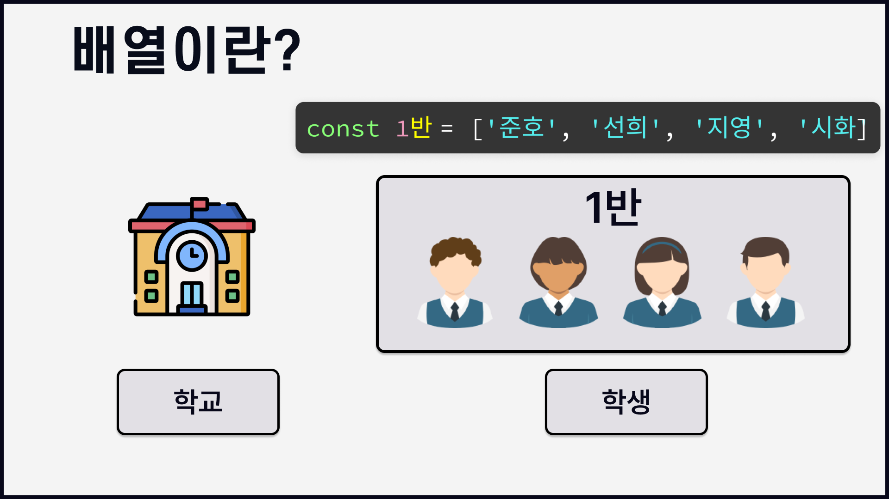

1.1. 개요 1.1.1. 배열의 생성 1.1.2. 배열에 사용하는 메서드 1.1.2.1. 배열병합 1.1.2.2. 다양한 배열 메서드 1.1.2.2.1. splice() 1.1.2.2.2. slice()
1.1.3. 전개연산자 spread operator
#
배열
#
1.1. 개요
자바스크립트에서의 배열은 객체 입니다.
배열은 여러 값을 한공간에 저장할때 쓰입니다.
배열은 한 반에 속한 여러 학생을 생각하면 됩니다.

이때 우리는 학급을 배열, 학생을 요소 혹은 원소 라고 부릅니다.
학교에서는 한반에 속한 여러 학생들의 관리하기 위해 학생들에게 번호를 부여합니다.
이름으로 관리할 경우 동명이인이 있기도 하고 번호에 비해 효율성이 떨어지기 때문이지요.
이때 학생에게 부여되는 일련의 번호를 배열에서는 인덱스 번호라고 합니다.
배열의 선언은
[ ]값의 구분은,으로 합니다.배열의 인덱스 번호는
0부터 시작합니다.배열의 값(요소)은 문자,숫자,객체,함수 모든 자료형이 들어갈수 있습니다.
배열은 값의 집합이다
#
1.1.1. 배열의 생성
- array literal 의 사용
[]
- array object 의 사용
Array()
//배열생성1
let srt = [];
str = '안녕하세요';
document.write(str + '');
document.write(str[2] + '');
document.write(str[str.length - 1] + '');
const array = [273, 'String', true, function () {}, {}, [273, 103]];
console.log(array);
//배열생성2
var arr = [];
arr[0] = 'zero';
arr[1] = 'one';
arr[2] = 'tow';
console.log(arr);
var arr1 = [, , ,];
//배열생성3
var arr2 = new Array();
arr[0] = 'zero';
arr[1] = 'one';
arr[2] = 'tow';
//배열생성4
var arr3 = new Array('zero', 'one', 'two');
//배열생성5
var arr4 = new Array(3);
console.log(arr4);
#
1.1.2. 배열에 사용하는 메서드
#
1.1.2.1. 배열병합
-
코드1
concat()- 배열끼리 합치는 메서드
-
코드2
join():- 배열내 요소를 합치는 메서드
-
코드3
push(),unshift()- 새로운 요소를 추가하는 메서드
-
코드4
pop(),shift()- 배열에서 요소를 꺼내는 메서드.
기존의 배열의 값이 변경됩니다.
- 배열에서 요소를 꺼내는 메서드.
concat(): 배열끼리 합치는 메서드- 서로 다른 배열 2개를 합쳐서 새로운 배열을 반환합니다.
- 어느 배열을 먼저 작성하는냐에 따라 기준이 달라지며 반환되는 배열의 순서도 달라집니다.
concat()
const nums = [1, 2, 3];
const chars = ['a', 'b', 'c', 'd'];
// 두 개의 배열 합치기
const numsChars = nums.concat(chars);
const charsNums = chars.concat(nums);
document.write(`nums+chars: ${numsChars} <br> chars+nums:${charsNums} <hr> }`);join(): 배열내 요소를 합치는 메서드- 배열 요소를 연결해 하나의 문자열로 만듭니다.
- 이떄 각 요소사이에 원하는 구분자를 넣을수도 있는데 별도로 지정하지 않을경우 쉼표로 구분합니다.
상수 nums와 chars의 초기화는 코드 1의 반복으로 생략합니다.
join()
const string1 = nums.join();
document.write(`구분자 없이 : ${string1}<br>`);
const string2 = chars.join('/');
document.write(`/ 구분자 지정 : ${string2}<hr>`);push(): 새로운 length 값 반환 - 배열끝에 추가unshift(): 새로운 length 값 반환 - 배열앞에 추가- 배열에 새로운 요소를 추가하려면 push() 나 unshift()를 사용합니다.
- 두 메서드를 사용하면 원래 배열의 값이 변경된다는 점에 유의해야 합니다.
상수 nums와 chars 는 코드 1의 반복으로 생략합니다.
push(), unshift()
// 요소 추가 - 새로운 length 값 반환
const ret1 = nums.push(4, 5); // 배열 끝에 추가
document.write(`length: ${ret1} | 새로 태어난배열 nums : ${nums} <br>`);
const ret2 = nums.unshift(0); // 배열 앞에 추가
document.write(`length: ${ret2} | 새로 태어난배열 nums : ${nums} <hr>`);pop()- 배열 뒤에서 요소를 꺼낼때
shift()- 배열 앞에서 요소를 꺼낼때
기존의 배열의 값이 변경됩니다.
상수 nums와 chars 는 코드 1의 반복으로 생략합니다.
pop(),shift()
// 요소 추출 - 꺼낸 요소 반환
const popped1 = chars.pop(); // 마지막 요소 꺼냄
document.write(`꺼낸 요소 : ${popped1} | 배열 : ${chars} <br>`);
const popped2 = chars.shift(); // 첫번째 요소 꺼냄
document.write(`꺼낸 요소 : ${popped2} | 배열 : ${chars} <hr>`);
#
1.1.2.2. 다양한 배열 메서드
#
1.1.2.2.1. splice()
-
코드1
splice()- 원하는 위치에 요소를 추가, 삭제하는 메서드 입니다
- 함수에 인수를 몇개 넣는가에 따라 기능이 달라집니다.
- 🔗MDN
splice()
const numbers = [1, 2, 3, 4, 5];
const newNumbers = numbers.splice(2);
document.write(`반환된 배열 : ${newNumbers} <br> 변경된 배열 : ${numbers} <hr>`);- 인수가 1개인 경우
numbers.splice(2);: 괄호안의 2는 배열의 인덱스 값을 가리킵니다.해당 코드는 인덱스값이 2인 요소부터 마지막 요소까지 모두 삭제 합니다.- 반환된 배열은 인덱스 번호 2~마지막까지의 값이 반환되며
- 변경된 배열은 인덱스 번호 0~1 에 해당하는 값이 반환됩니다.
- splice 메서드는 배열의 중간에 요소를 추가/삭제 할수 있습니다.
splice()
const study = ['html', 'css', 'web', 'jquery'];
const newStudy = study.splice(2, 1);
document.write(`반환된 배열 : ${newStudy} <br> 변경된 배열 : ${study} <hr>`);- 인수가 2개인 경우
- 인수가 2개일경우 첫번째 인수는 인덱스 값이고 두번째 인수는 삭제할 요소의 갯수입니다.
study.splice(2, 1);: 인덱스가 2인 web 부터 1개의 요소를 삭제합니다..- 반환된 배열은 인덱스 번호 2이며 1개인 web입니다.
- 변경된 배열은 인덱스 번호 0~1 에 해당하는 값이 반환됩니다.
- splice 메서드는 배열의 중간에 요소를 추가/삭제 할수 있습니다.
splice()
const newStudy2 = study.splice(2, 1, 'js');
document.write(`반환된 배열 : ${newStudy2} <br> 변경된 배열 : ${study} <hr>`);- 인수가 3개 이상일 경우
- 인수가 3개 이상일 경우 첫번째 인수는 배열에서 삭제할 시작위치를 나타내고 두번째 인수는 삭제할 갯수를 알려줍니다. 그리고 세번째 인수부터는 삭제한 위치에 새로 추가할 요소를 지정합니다.
const newStudy2 = study.splice(2, 1, 'js');: 인덱스 값이 2인 jquery 1개를 삭제하고 js를 추가합니다.- jquery 자리에 js를 확인할수 있습니다.
#
1.1.2.2.2. slice()
This is Tab 1
const colors = ['red', 'green', 'blue', 'white', 'black'];
const colors2 = colors.slice(2); //인덱스 2부터 끝까지
document.write(`${colors2} <br>`);
const colors3 = colors.slice(2, 4); // 인덱스 2,3
document.write(colors3);pop(),shift()처럼 요소에서 값을 꺼내지만 원본 배열을 변경하지 않습니다.
#
1.1.3. 전개연산자 spread operator
-
기본형
...- 전개연산자는 메서드가 아니며 배열이나 객체와 같은 iterable한 데이터를 편리하게 다룰 수 있도록 도와주는 문법입니다.
- 배열이나 객체의 값을 펼쳐서 꺼내어 주는 operator 입니다.
const arr = [1, 2, 3];
console.log(...arr); // 1 2 3const arr1 = [1, 2, 3];
const arr2 = [4, 5, 6];
const arr3 = [...arr1, ...arr2];
const arr4 = [arr1, arr2];
console.log(arr3); // [1, 2, 3, 4, 5, 6]
console.log(arr4);